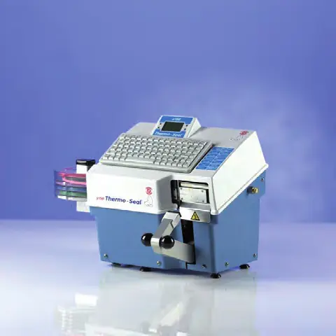
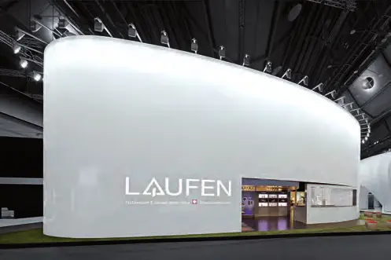
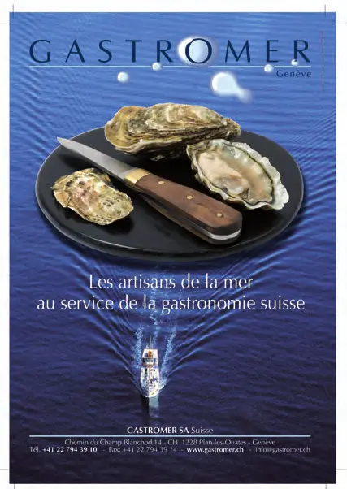

Santé · 2011 · Genève
Swiss Knowhow – HUG Hôpitaux Universitaires de Genève 2011
Numéro bilingue français-anglais consacré aux Hôpitaux Universitaires de Genève, publié en juin 2011 par Great Media SA. Le directeur général et les responsables de services y présentent le plan stratégique Vision 2015, les grands chantiers, la politique d'hôpital vert, l'engagement humanitaire et les domaines d'excellence : médecine génétique, chirurgie robotique, greffes pédiatriques, virologie, neurosciences, psychiatrie. Une partie « Partenaires » décrit les plateformes associées (recherche clinique, oncologie, CIBM, Brain and Behaviour Laboratory, UNITEC, thérapies cellulaires, OsiriX, maladies rares), puis une quarantaine de « Company profiles » (pages 98 à 178) présentent fournisseurs et partenaires des HUG : pharma, dispositifs médicaux, laboratoires, imagerie, services et construction.
Sommaire · 62 articles
 Interview
InterviewLes HUG à l'horizon 2015
Entretien avec M. Bernard Gruson, directeur général (version anglaise : The HUG by 2015)
InterviewLes HUG font peau neuve
Quatre gros chantiers simultanés – avec M. F. Taillard, directeur général adjoint (version anglaise : The HUG gets a facelift)
InterviewUn modèle « d'hôpital vert »
Les HUG en pionniers européens (version anglaise : The model of a "green hospital")
InterviewAu cœur de la Genève internationale
Les HUG s'impliquent dans des projets humanitaires – avec le professeur Louis Loutan (version anglaise incluse)
InterviewL'indispensable « U » des HUG
Une interface nouvelle entre l'Hôpital et la Faculté – avec le professeur Jean-Louis Carpentier (version anglaise incluse)
InterviewSécurité et qualité aux HUG
Souci d'excellence et outils performants pour réduire les risques – avec le Dr Pierre Chopard (version anglaise incluse)
InterviewSur le front de la médecine de premier recours
Les HUG assument leur rôle social en toute transparence – avec le professeur Jean-Michel Gaspoz (version anglaise incluse)
InterviewLe sport entre santé et performance
Une unité médicale performante – avec le Dr Jacques Menetrey (version anglaise incluse)
InterviewInfarctus : diminuer le risque de récidive
Les HUG ont initié le programme ELIPS® à l'échelle nationale – avec le Dr Pierre-Frédéric Keller (version anglaise incluse)
InterviewLa médecine génétique
Genève au cœur d'une révolution médicale – avec le professeur Stylianos Antonarakis (version anglaise incluse)
InterviewLa chirurgie entre dans une nouvelle ère
Les HUG leaders en chirurgie robotique – avec le professeur Philippe Morel (version anglaise : Surgery enters a new era)
DossierGreffes du foie chez l'enfant
Les HUG à la pointe (version anglaise : Liver transplants for children)
InterviewLes anévrismes intracrâniens
@neurIST, un projet porteur d'espoir – avec le Dr Philippe Bijlenga (version anglaise incluse)
InterviewLe laboratoire de virologie
Un centre de référence national – avec le professeur Laurent Kaiser (version anglaise incluse)
Interview« Prometheus » contre Parkinson
Les HUG au centre d'un vaste projet de recherche – avec le professeur Pierre Burkhard (version anglaise incluse)
InterviewLes défis de la psychiatrie
Nouveaux modèles de prise en charge – avec le professeur Pandelis Giannakopoulos (version anglaise incluse)
InterviewLa recherche clinique aux HUG
Un centre au service des chercheurs – avec le professeur Bernard Hirschel (version anglaise incluse)
DossierOncologie : les HUG à la pointe
Un écrin spécialisé pour la recherche – avec le professeur Pierre-Yves Dietrich (version anglaise incluse)
InterviewHUG et EPFL unis contre le cancer
La stratégie du vaccin thérapeutique – avec le Dr Nicolas Mach (version anglaise incluse)
DossierCIBM : une plate-forme de recherche au service de la médecine
Avec le Dr François Lazeyras, directeur du CIBM Genève (version anglaise incluse)
DossierMicroPET : la plate-forme genevoise d'imagerie moléculaire du CIBM
Version anglaise : MicroPET: the Genevan platform for CIBM molecular imaging
 Dossier
DossierUn centre d'étude en neurosciences unique en Europe
Brain and Behaviour Laboratory (BBL) – avec le professeur Patrik Vuilleumier, codirecteur
DossierUne formation pour éviter les erreurs au bloc opératoire
Le cours « Crew Resource Management » Swiss-HUG – entretien avec le Dr Domizio Suva
DossierDe l'excellence académique au succès économique
UNITEC, dix ans de transfert de technologies – entretien avec Laurent Mieville
DossierThérapies cellulaires en plein développement
SICT, une fondation qui accélère le mouvement – entretien avec la Dre Marisa Jaconi
DossierOsiriX, l'imagerie médicale en 3D à la portée de tous
Un logiciel libre né aux HUG – professeur Osman Ratib et Dr Antoine Rosset
DossierMaladies rares, nombreuses souffrances
Pour une stratégie nationale – entretien avec la Dre Loredana D'Amato Sizonenko (Orphanet, ProRaris)
 Publireportage
PublireportageAlexion Pharma International
An interview with Patrice Coissac – “Delivering hope, restoring health, enhancing life”

ATMOS Medical AG
Entretien avec M. Jacky Noll, directeur
PublireportageCentre d'imagerie biomédicale (CIBM)
Un modèle de collaboration dans le domaine de la recherche
PublireportageLa Croix-Rouge genevoise, au service de la population
Entretien avec Mme Eliane Babel-Guérin, directrice
PublireportageCurmed SA, Ostermundigen
Un partenaire fort en chirurgie de la main, orthopédie et traumatologie – entretien avec M. David Perron, directeur
 Publireportage
PublireportageDianalabs
Un laboratoire à l'écoute des patients et des médecins
PublireportageID Imagerie & Développement : qualité, disponibilité et service
Instituts Imagerive et Radiologie La Colline

PublireportageJ.P. Müller AG
Tradition et compétences : le savoir-faire de J.P. Müller AG
PublireportageMayBa.ch, le spécialiste en stérilisation hospitalière
Avec Stéphane Mayor et Ralf Bachman, fondateurs
 Publireportage
PublireportageMedacta International
Une vie meilleure grâce aux progrès orthopédiques
PublireportageMedicatech
Entretien avec M. Stéphane Andrist
 Publireportage
PublireportageMerck Sharp & Dohme AG (MSD) Switzerland
“Well being and good health is our mission” – interview with Adriaan Ruijs, Managing Director
PublireportageMMM Sterilisatoren AG – Tradition und Innovation
Ein Gespräch mit Kamel Henni, Geschäftsführer
 Publireportage
PublireportagePwC
Entretien avec M. Philippe Tzaud et M. Dominique Perron – le nouveau visage d'un groupe international
 Publireportage
PublireportageReactolab SA
Une distribution multiqualitative et personnalisée
PublireportageLa radiologie est un secteur médical ultra-spécialisé
Entretien avec le professeur Frank Pilleul, radiologue au sein de Rive Droite SA
 Publireportage
PublireportageSCA Hygiene Products AG – Der unangefochtene Inkontinenz-Spezialist
Im Gespräch mit Franco Cesario, Sales Director Schweiz

PublireportageDas Komplettbad aus einer Hand
Im Gespräch mit Klaus Schneider, Managing Director Keramik Laufen AG und Similor AG
PublireportageSIPAEC SA
Une gamme complète de produits et de machines de nettoyage
PublireportageTRB Chemedica International SA : le patient d'abord...
La relève : Alessandro Di Napoli, vice-président Marketing
Tornier AG
Entretien avec M. Christian Beyeler, directeur – Des spécialistes au service de spécialistes

Industrial property and health
Interview with Mr Jean-Alain Schulz – Bugnion SA, conseils en propriété intellectuelle
PublireportageBJ-Coffee SA
« Un service de qualité pour les clients les plus exigeants »

PublireportageGastromer
Poissons, coquillages et crustacés à Plan-les-Ouates
PublireportageCasabat SA
Entretien avec M. Juan Casanova, directeur

Transferts Vidéo & Film SA
Entretien avec M. Eric Von Büren, directeur
 Publireportage
PublireportageCitroën Suisse SA – Succursale de Genève
Entretien avec M. Denis Picard, directeur
 Publireportage
PublireportageGarage Emil Frey SA Genève
Entretien avec M. Alexandre Farago, directeur
Gets Medical Safety Systems SA
Le leader en appel malade
 Publireportage
PublireportageVeltigroup
Entretien avec M. Nicolas Fulpius, CEO
 Publireportage
PublireportageMy Private Care
Entretien avec Mme Florence Baudoin, directrice
 Publireportage
PublireportageG. Schweizer SA
Le paradis des cuisiniers professionnels
 Publireportage
PublireportageUTC Fire & Security Services et SICLI : deux alliés contre les incendies
Prévention, extinction, évacuation et secours
AS Ambulances Services SA
Urgence, transport préhospitalier et rapatriement
Medileg SA
Entretien avec Mme Françoise de Peyerimhoff, directrice
Entreprises de ce numéro · 55
Alexion Pharma International Sàrl
Biopharmaceutique (maladies ultra-rares)
AS Ambulances Services SA
Service d'ambulances et de transport de patients
ATMOS Medical AG
Distribution d'équipements médicaux (ORL, gynécologie, chirurgie)
Binggeli Frères SA
Distribution de produits alimentaires

bj-coffee SA
Distribution de machines et cafés Nespresso (professionnels)

Brain and Behaviour Laboratory (BBL)
Centre de recherche en neurosciences
Bugnion SA
Conseils en propriété intellectuelle
Casabat SA
Entreprise de construction

Centre d'Imagerie Biomédicale – CIBM
Recherche en imagerie biomédicale

Centre de médecine universitaire CMU – Département de médecine génétique et développement
Recherche et diagnostic en médecine génétique

Centre Laser Victor Hugo
Non précisé
Chemie Brunschwig AG
Fournitures pour laboratoires et production
Citroën (Suisse) SA – Succursale de Genève
Garage et concession automobile

Croix-Rouge genevoise
Association humanitaire et sociale

Curmed AG
Distribution d'implants orthopédiques
Dianalabs
Laboratoire d'analyses médicales
École polytechnique fédérale de Lausanne (EPFL)
Haute école polytechnique
Emil Frey SA – Agence BMW-Mini Genève
Garage et concession automobile

Fondation Dr Henri Dubois-Ferrière Dinu Lipatti
Fondation de soutien à la recherche contre le cancer

Fondation OsiriX
Fondation (logiciel libre d'imagerie médicale)

Fondation pour les Nouvelles Technologies Chirurgicales (FNTC)
Fondation de recherche en technologies chirurgicales
G. Schweizer SA
Machines et fournitures pour boucheries et cuisines professionnelles

Gastromer
Grossiste en produits de la mer
Gets Medical Safety Systems SA (Gets MSS)
Systèmes d'appel malade et de sécurité
Hôpitaux universitaires de Genève – HUG
Hôpital universitaire

HUG – UNITEC, Office of Technology Transfer (Université de Genève)
Transfert de technologies

ID Imagerie & Développement (Imagerive et Institut de radiologie de la Colline)
Imagerie médicale

Institut suisse de thérapies cellulaires (Swiss Institute of Cell Therapies, SICT)
Fondation de recherche en thérapies cellulaires

J.P. Müller AG
Systèmes de marquage textile et techniques d'assemblage du bois
Johnson & Johnson AG
Produits et dispositifs médicaux
Keramik Laufen AG
Céramique sanitaire et équipements de salle de bains

L&F Serrurerie & Constructions Métalliques SA
Serrurerie et constructions métalliques
Marflow AG
Matériel médical pour l'urologie et la gastro-entérologie
MaxiVAX
Start-up biotechnologique – vaccins thérapeutiques

MayBa.ch SA
Stérilisation hospitalière
Medacta International
Dispositifs médicaux orthopédiques

Medicatech Sàrl
Maintenance et réparation d'instruments chirurgicaux
Medileg SA
Distribution de bas de compression et produits orthopédiques
Merck Sharp & Dohme AG (MSD)
Industrie pharmaceutique

MMM Sterilisatoren AG
Systèmes de stérilisation et de désinfection
My Private Care Sàrl
Soins à domicile privés
Orphanet Suisse – Service de médecine génétique (HUG)
Information sur les maladies rares
ProRaris, Alliance des maladies rares – Suisse
Association faîtière de patients
PwC
Audit et conseil
Reactolab SA
Distribution de produits chimiques et de matériel de laboratoire

Rive Droite SA
Imagerie médicale et radiologie interventionnelle
SCA Hygiene Products AG
Produits d'hygiène et d'incontinence (TENA)
SICLI Switzerland – UTC Fire & Security Services
Protection et sécurité incendie

Similor AG
Robinetterie sanitaire
SIPAEC SA
Produits et machines de nettoyage professionnel
Tornier AG
Dispositifs médicaux orthopédiques (extrémités)
Transferts Vidéo & Film SA (TVF)
Transfert et sauvegarde de films et vidéos

TRB Chemedica
Laboratoire pharmaceutique (ophtalmologie, rhumatologie, neurologie)
Université de Genève – Faculté de médecine
Faculté universitaire de médecine
Veltigroup
Services informatiques et de télécommunication (ICT)
Aucun résultat.